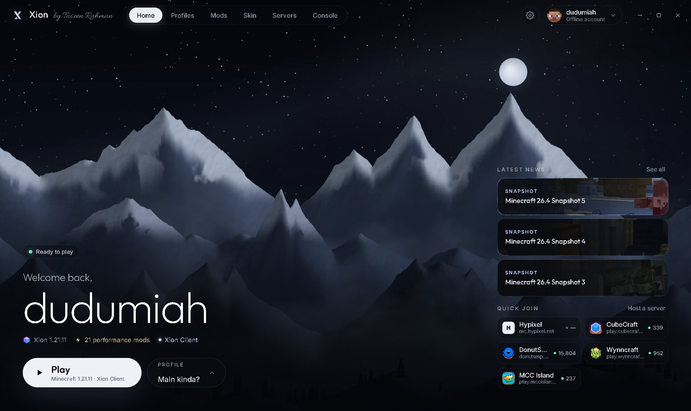
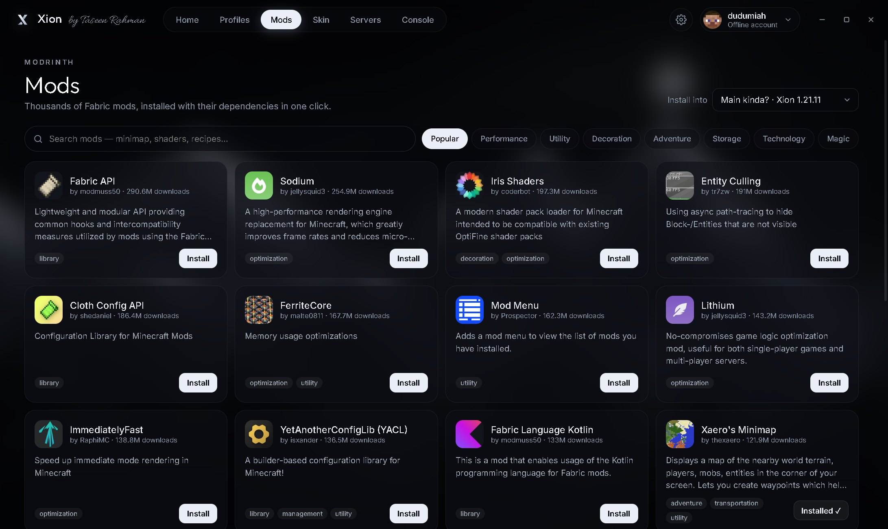
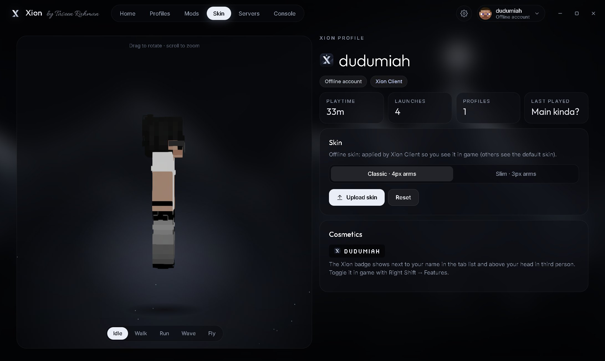
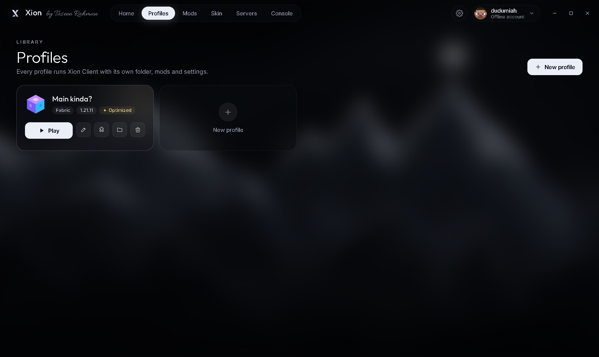

Every version since 1.18
Xion Client ships a build for each one. Pick a version, it just works.
← drag →32 builds
Fabric defaultQuiltVanilla menus reskinnedJava picked for you
MINECRAFT CLIENT1.18 → 26.3
Fast by default. Every version since 1.18. A HUD you drag where you want it, skins that show up even offline, and a launcher that fixes its own crashes.
made by Taseen Rahman

Xion Client ships a build for each one. Pick a version, it just works.
Xion’s own FPS engine is tuned into every profile from the start. Nothing to install.
12 modules. Drag them around this little screen — and try pressing W A S D.
Opens the Xion menu in game. Here too — press it.
Upload a skin in the launcher. Xion shows it in game — on offline accounts too.
Thousands of Fabric mods from Modrinth. Dependencies come along automatically.
Paper servers on your own PC for you and your friends. No command line needed.
A mod breaks? Xion finds it, turns it off and relaunches. Missing a library? It grabs it.
Slow DNS, flaky router? Xion retries smartly and caches what it can.
The main menu, pause menu and every vanilla screen get the same calm mountain backdrop.



The real Minecraft Java Edition on Android — same worlds, same servers, same mods — tuned so it stays playable on ordinary phones.
Play offline with just a username, or sign in with Microsoft. Best on phones with 4 GB RAM or more and a 64-bit chip. Based on the open-source Amethyst engine — Xion Mobile source (LGPL-3.0).
Press Right Shift in game and Xion Client opens straight on Mods: every mod in your profile as an animated card with its own logo, cut clean from its background. Flip a mod on or off with its switch, or open its settings with the ⚙ button. Filter by Xion Pack or the mods you added yourself. Changes apply the next time you press Play, and mods other mods depend on stay safely on.
Pick any version from 1.18 to 26.3 and play it in PvP mode. Xion Client switches to a fighting HUD (combo, reach, CPS keystrokes, armor, potions, totem and gapple counts), a sharp red PvP menu, a PvP mod pack (performance, low fire, hit colour, zoom, freelook) and tuned game options. Join Hypixel, Minemen Club and more straight from the PvP page.
Smooth motion blur now comes with every modern version too, 1.18 to 26.3. Set the strength in Mod Menu, or switch it off per profile.
Players on Xion Client now see each other’s Xion badge in the tab list and above their heads. Gold for Xion+, white for free. Turn it off with “Xion Badge” in the menu.
Xion’s own resource pack, on by default: dark inventories, chests and menus, smaller swords and tools in your hand, a lower shield and a clear pumpkin view. Made for each game version Turn it off in Settings or under Resource Packs.
Proximity voice built in. Hold Caps Lock to talk, press V for volume and mic settings. Works in your worlds, over LAN and on servers with voice chat.
Hold a key and look all around you while you keep running straight. Pick the key in Controls.
From v1.10 the installed launcher downloads new versions in the background. One click on Restart to update and you’re current.
One click in Settings → Performance. Tuned for integrated graphics; applied once, so you can still tweak video settings after.
Next to your name in the tab list, chat and F5 — a clean transparent X, no more square tile.
More of Xion’s FPS engine, matched to each game version and installed automatically.
Colours, menus and the mountain backdrop change together — in the launcher and in the ESC menu.
9 capes are free for everyone. Xion+ unlocks all 110, including 12 animated ones, and lets you upload your own. Your elytra always matches your cape. Pick one in Xion Launcher → Skin, or in game with Right Shift → Cosmetics.
No account with us, no sign-up, no ads. Java is downloaded for you, per version.
5258926ad3676b58c7681e1b4e54029ccaa81f16ccc5254def9b6442ee4d76bb
186f1bdace6bda879af9a2e1bd64287edda7417a8d49b5ce2abe71b5bded9e7a
0dc6391306d44147089336272f5193f852300490b9fa511e88f6852805a52ace
11eb3e97f705d7238edff6e6e7aa238bd2cbe70488be45a0155511c79ae07d05
714835789c2d13a009d7aa9e610ff727785eaacb51c5d921d19cbaa69b37daa3
Yes. The launcher, Xion Client, Boost mode and the free themes cost nothing — no ads, no account with us. Xion+ is an optional one-time extra: $5, ৳150 or ₹350. You still need to own Minecraft to play online with a Microsoft account.
Xion only adds things like a HUD, zoom and performance tweaks — the same kind of features most clients ship. Auto Sprint and Fullbright are toggles; check a server’s rules if you’re unsure and switch them off.
Every release from 1.18 to 26.3, with Fabric or Quilt. Each version gets its own Xion Client build, so menus, HUD and skins work everywhere.
Yes — that’s what Performance modes are for. Boost (free) and Turbo (Xion+) cut the heaviest settings. How many FPS you get still depends on your chip and RAM, so give the game at least 3–4 GB in Settings → Memory.
Yes. Search Modrinth inside the launcher, or drop jars into the profile’s mods folder. Dependencies install automatically.
The app isn’t code-signed yet, so SmartScreen doesn’t recognise it. You can compare the file with the SHA-256 checksum above before running it.
Xion Mobile needs Android 8 or newer, a 64-bit chip, and runs best with 4 GB of RAM or more. Lite mode keeps settings low by default; turn it off from the home screen if your phone can handle more. To install, allow “Install unknown apps” when Android asks.
Linux is here: an AppImage (any distro; run chmod +x on it, then open it) and a .deb for Ubuntu and Debian, 64-bit only. Mac and iPhone: not yet.